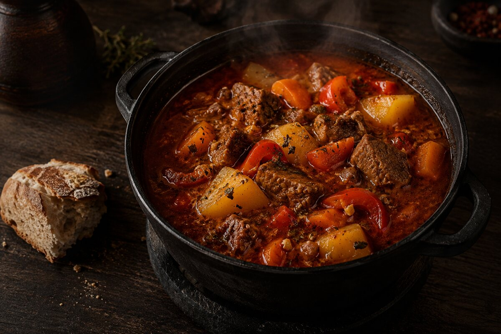
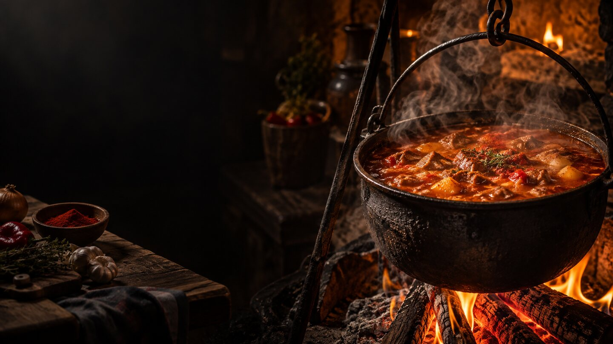

Бограч-гуляш
240 ₴Традиційний, наваристий, з ароматною паприкою.

НЕОФІЦІЙНИЙ PORTFOLIO CONCEPT · SERG WEB
ТРАДИЦІЙНА ЗАКАРПАТСЬКА КУХНЯ
Концепт ресторанного сайту, де гість швидко бачить меню, формат замовлення й наступну дію.
Це не офіційний сайт ресторану. Незалежний portfolio concept від SERG WEB. Назва використана лише для демонстрації дизайну; фото, меню, ціни та сценарії нижче — приклад структури.
ТРАДИЦІЯ · СТРУКТУРА · ДІЯ
Цей концепт показує, як ресторанний сайт може передати характер кухні й водночас не змушувати людину шукати важливе.
Спочатку — атмосфера та головна пропозиція. Далі — меню, формат замовлення і простий перехід до контакту, який у реальному проєкті підключається до перевірених даних закладу.
ОДНА ЧІТКА ДІЯ ЗА РАЗ
Страви, короткий опис і ціна — без зайвого пошуку.
На місці, навиніс або бронювання — залежно від задачі гостя.
У реальному сайті тут підключаються тільки підтверджені контакти чи бронювання.
SERG WEB · PORTFOLIO
Це незалежний макет для портфоліо SERG WEB, а не замовлення чи офіційна присутність ресторану. Ми не використовуємо тут адресу, телефон, Instagram або форму бронювання ресторану.
Переглянути SERG WEB ↗ЩО ПОКАЗУЄ ЦЕЙ CONCEPT